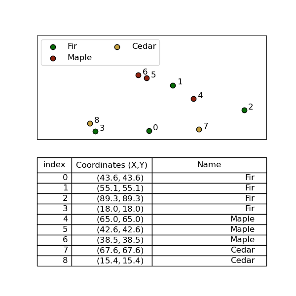
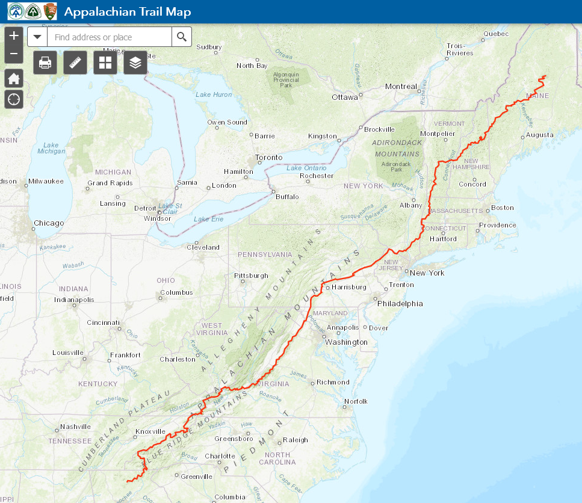
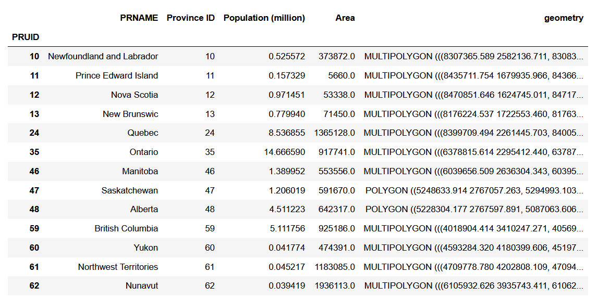

Vector Data Model
Represents an object as a set of x,y coordinate pairs (points) linked to set of descriptive attribute about that object.

Points
“Zero-dimensional”: no length, or width.
A point feature is an individual 𝒙,𝒚 coordinate pair representing a precise location, that have some linked attribute information.
Points
Points are great for representing a variety of objects, depending on the scale. Trees, fire hydrtants, etc. can be points at almost any scale, cities can be points at small sacles.

Lines
One-dimensional, they have length but no width.
A line has two or more points. Every line must have a start point and end point. May also have middle points (vertices).
Lines
Lines are also great, depending on the scale.
Hiking trails, power lines etc. can be represented as lines in almost most applications.

Lines
When making smaller scale maps, its often sufficient to represent rivers and roads as lines, though at large scales we might elect to use a polygon.

Polygons
Two-dimensional, length x width = area
All polygons consist of a set of at three or more points (vertices) connected by line segments (edges) called “edges” that connect to form an enclosed shape.
Polygons
All polygons form an enclosed shape; some can also have "holes" (think doughnuts!) called interior rings. Each interior ring is a separate set vertices and edges contained within the polygon; interior rings cannot overlap.

Polygons
Polygons are useful for representing many different objects depending: political boundaries, climate zones, lakes, etc.

Polygons
At large scales they can represent things like buildings
Which we might choose to represent as points at smaller scales
Multi-part Vectors
Sometimes, an object has multiple parts, that are spatially separated. In these circumstances, the vector model allows for multi-polygon, multi-line, or multi-point objects.

Multi-part Vectors
Roads sometimes need to be stored as multi-lines as well, for example Highway 1 crosses the Georgia Straight from Vancouver to Nanaimo. If we want the to represent the entire Highway as one object, we need to use a multi-line.

Tabular Data
The non-spatial attribute data is usually stored in a Tabular format separate from the spatial data.

A key advantage of vector data is the ability to store/retrieve many attributes quickly.
Linking Spatial and Non-Spatial Data
Attributes are linked to shapes by an index
Resolution
Vector data also has a resolution although it has a somewhat different definition and isn't as straightforward.